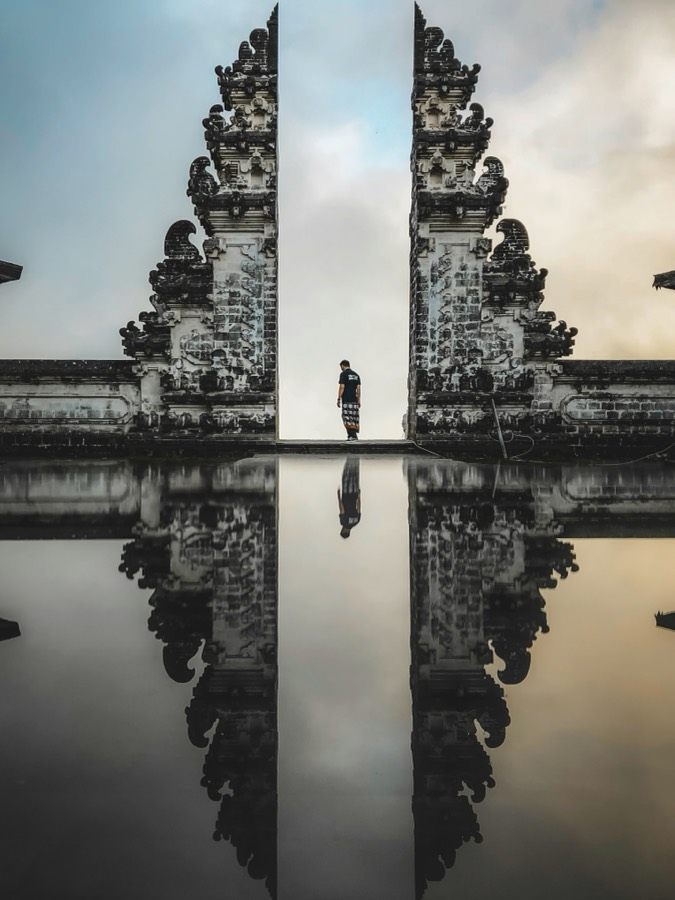
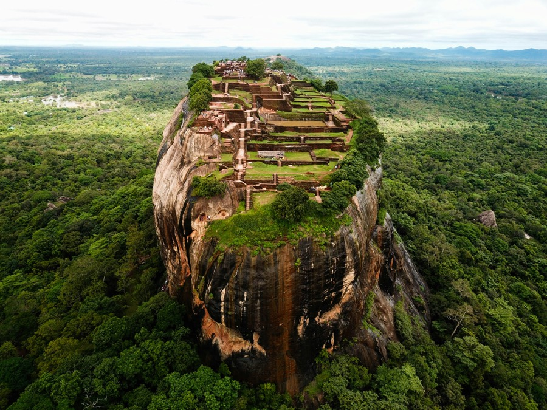
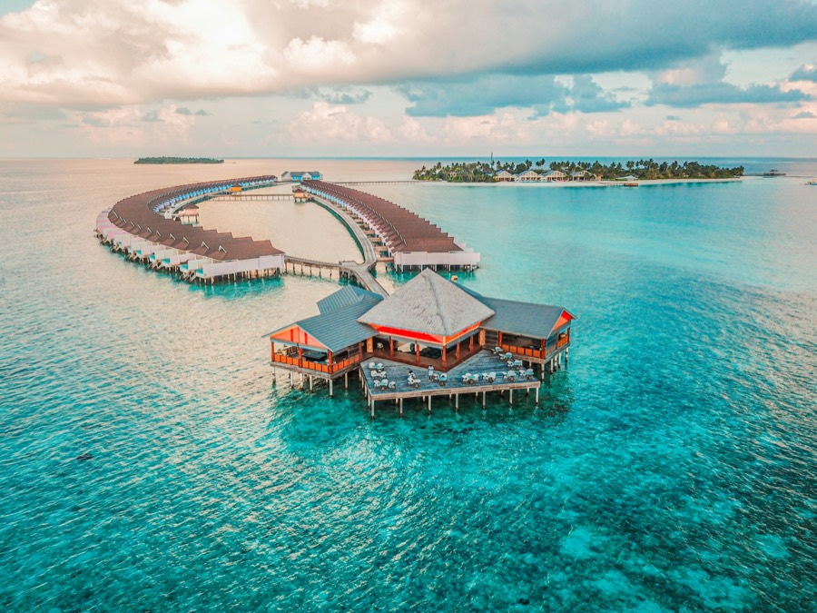
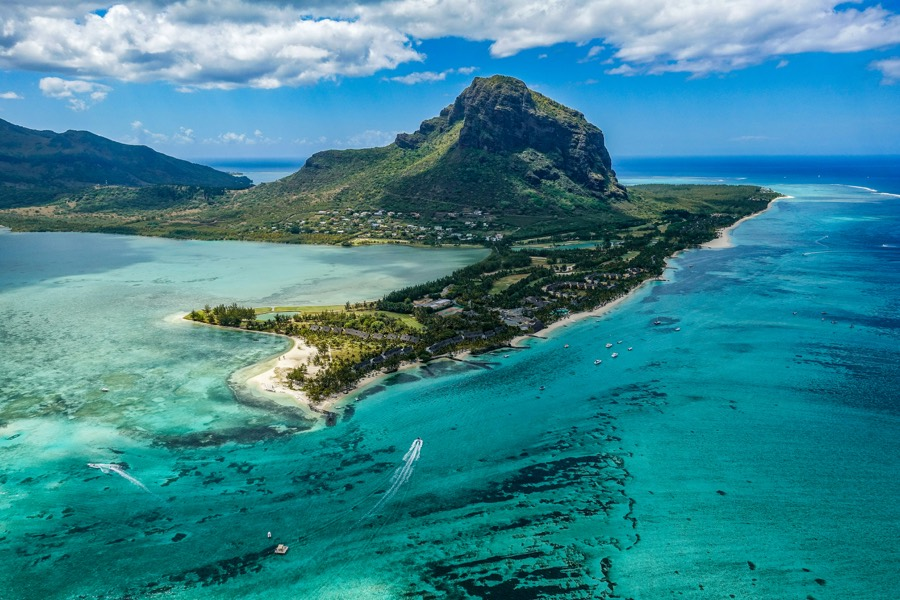
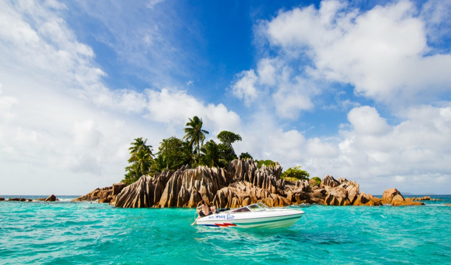
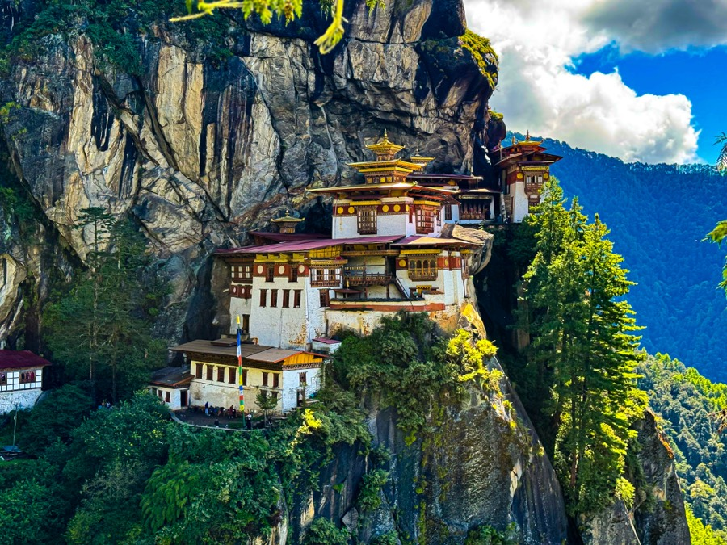
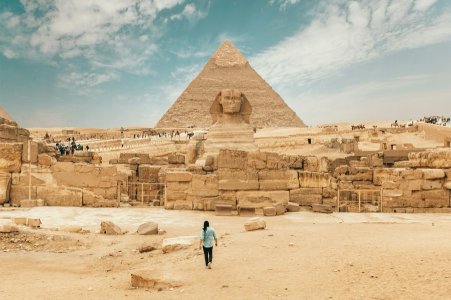

Dubai
City tour, desert safari and Abu Dhabi
Pick a place from below or tell us somewhere else.
Our team discusses your plans and answers your questions.
We help with the journey and point you to visa, flights and forex.
Choose a package to see its day-wise itinerary, then send an enquiry for pricing and availability.
Showing 32 packages
City tour, desert safari and Abu Dhabi
City tour, desert safari, Abu Dhabi and Miracle Garden

Night Safari, Universal Studios and Gardens by the Bay
Night Safari, Universal Studios and Singapore Zoo

Kuala Lumpur, Genting Highlands and Putrajaya
Kuala Lumpur and Singapore
Kuala Lumpur and Singapore, with Sentosa Island

Coral Island, Pattaya sightseeing and a Bangkok city tour

Phi Phi Islands and the Krabi Four Islands tour
Coral Island, Pattaya sightseeing and a Bangkok city tour

Kuta, Mount Batur views, Tegallalang and Ubud
Kuta, Ubud, Monkey Forest and a Denpasar city tour
Kuta, Ubud, Tanah Lot and Uluwatu

Kandy, Nuwara Eliya, Bentota and Colombo
Kandy, Nuwara Eliya, Bentota and a Colombo city tour
Kandy, Nuwara Eliya, Bentota, Galle and Colombo

Resort stay with optional water activities and excursions

North and South island tours and Ile aux Cerfs

Praslin, La Digue and Mahé

Thimphu, Punakha and Paro, with the Tiger’s Nest hike

Tokyo, Mount Fuji, Kyoto, Nara and Osaka
Tokyo, Mount Fuji, Kyoto, Osaka and Universal Studios Japan

Beijing, Zhangjiajie and Shanghai

Baku’s Old City, Gobustan and an optional Gabala day trip
Baku, Gobustan, Tbilisi and the Kazbegi excursion

The Old City and a ferry to the Princes’ Islands

Cairo, the Pyramids, Alexandria and Khan El Khalili

Brisbane and the Gold Coast theme parks
Brisbane, the Gold Coast and Cairns, with the Great Barrier Reef

Auckland, Rotorua, Queenstown and Christchurch
Auckland, Queenstown, Milford Sound, Franz Josef, Christchurch and Rotorua
Auckland, Rotorua, the TranzAlpine train, Queenstown and Christchurch
Prices and inclusions are not shown on this page. Send an enquiry and our team will get back to you.
Share a few details and we’ll get back to you.